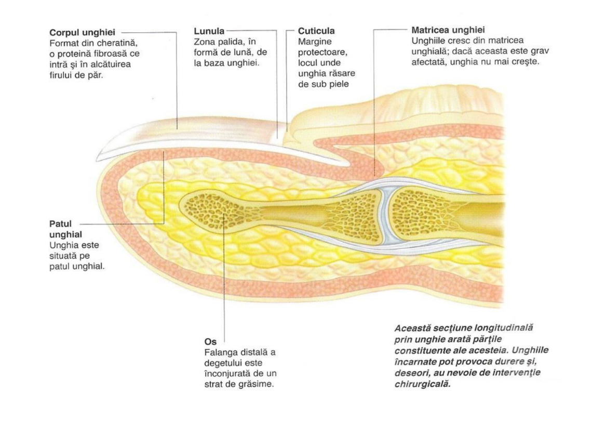
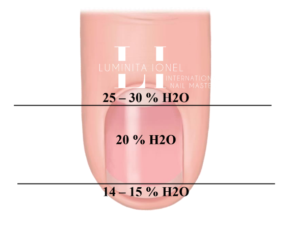

Unghia este o lamă semidură formată din straturi de cheratină care îi conferă duritate, protejând astfel extremitățile degetelor. Partea vizibilă a unghiei sănătoase este netedă și lucioasă, aspectul acesteia modificându-se în cazul micozei unghiei. Unghia este formată din mai multe părți: Lama unghiei este unghia însăşi. Partea din afara patului unghiei se numeşte marginea liberă. Unghia nu “respiră”, este ţesut mort – de aceea nu doare atunci când este tăiată. Lunula este pata de formă semirotundă situată la baza lamei unghiei. Patul unghial este reprezentat de ţesutul rozaliu de sub unghie. Are această culoare pentru că este puternic vascularizat. O culoare albăstrie a patului sunghial poate însemna că ai probleme cu circulaţia periferică, iar o culoare albicioasă sau galben-maronie se poate datora prezenței ciupercii unghiei. Matricea unghiei este partea sa cea mai importantă. Produce cheratina din care este alcătuită unghia şi determină forma şi grosimea acesteia. Atunci când matricea este afectată apare deformarea unghiei, care poate favoriza apariția ciupercii unghiei. Cuticula, perionychium şi eponychium sunt cutele de piele pe care le face lama unghiei (pielea din jurul unghiei). Au un rol extrem de important: sigilează unghia și o protejează împotriva agresorilor externi (ciuperci, bacterii).
Aici se produc celulele care formează unghia Din latină, matrice=mother=mamă. În concluzie, matricea este mama unghiilor. Doar aici iau naștere celulele care formează placa unghială. Matricea este o placă care în partea ei distală este curbată, ușor arcuită iar în partea proximală este dreaptă, plată.
Celulele de la baza matricei se numesc celule onicoblaste. Acestea sunt celulele mamă care se divid, se înmulțesc și fiecare celulă mamă dă naștere unei noi celule fiică. Celulele fiică se numesc onicocite. Apoi, matricea își continuă procesul și pe masură ce sunt împinse la suprafață, onicocitele trec prin procesul de maturizare și se aplatizează ( are loc procesul de keratinizare ). Astfel se formează acel țesut dur de la suprafață unghiei, unghia pe care o știm noi. Onicocitele, când iau naștere sunt rotunde, sunt pline de citoplasmă, cantitatea de apă din aceste celule fiind foarte mare. În procesul de keratinizare, la suprafață, celulele se aplatizează, îsi pierd nucleul și se formează în solzișori, anume suprafața dură. Onicocitele mai conțin lipide, care sunt responsabile de alipirea celulelor onicocite keratinizate complet.
Onicocitele sintetizează keratina. Keratina este o proteină care este formată din aminoacizi, printre care CISTEINA care conține sulf. Legăturile de sulf formează duritatea keratinii, a unghiilor. Practic, nu calciul din organism dictează duritatea unghiilor cum se știe din popor, ci aceste legaturi de sulf care sunt date de cantitatea de cisteină. Aceasta cistein o primim genetic.
Matricea este împărțită în 2 :
Este formată din rădăcina unghiei, corpul unghiei și marginea liberă. Toată această structură se sprijină pe zona 3.Placa unghială este dată de straturile unghiei.
Stratul dorsal al unghiei este format din celule dure, keratinizate ( acele onicocite ajunse la maturitate, aplatizate ). Acestea sunt cele care susțin aderența cu un polimer. Grosimea stratului dorsal reprezinta 20 - 25 de straturi. În stratul dorsal cantitatea de apă este foarte mică si se evapora mult mai repede fiind la suprafață. Acest lucru face ca aderența cu un polimer să poata avea loc în acest strat dorsal. Cu cât pilim mai mult din stratul dorsal, ne apropiem de stratul intermediar. Aici apa nu se poate evapora, iar gelul fiind hidrofob ( îi este frică de apă ), aderenta nu va fi una bună.
Stratul intermediar - ia naștere din partea distală a matricei. Acele celule onicocite care nu ajung la maturizare, nu se keratinizează. În stratul intermediar, celulele cresc mai lent decât în stratul dorsal, se divid mai lent.
Este formată din patul unghial. Patul unghial este o structură moale care se sprijină pe osul falangelui cu ajutorul ligamentelor frontale ( fibre de colagen ) și ligamentelor posterioare. Aceste ligamente formează zona 4. Între patul unghial și osul falangelui se află ONICODERMA. Onicoderma conține fibre de colagen, datorită cărora unghia stă fixată pe osul falangelui.
Este formată, cum spuneam mai sus, din ligamentul frontal și ligamentul posterior. Datorită acestor ligamente, unghia noastră este foarte bine fixate și tot ele ne arată forma unghiei vazută din profil. Ele sunt responsabile de curbură. Dacă ligamentele posterioare sunt foarte scurte, foarte strânse, iar ligamentele frontale sunt normale, atunci vom avea o unghie din profil cu vârful în sus ( concavă ).
Sigilează intrarea în unghie în partea de sus. Zona cuticulară în partea de sus ( partea dorsală ), este dată de eponichium, iar în partea de jos este dată de hiponichium, care blochează intrarea dinspre vârful liber. Hiponichiumul este responsabil de buna prindere a unghiei pe patul unghial. Dacă acest hiponichium este agresat, intervine desprinderea unghiei de patul unghial ( onicoliza ).
Toata aceasta structură este protejată de carcasa, carcasa formată din țesuturi moi : faldul proximal, faldul distal și faldurile laterale. Practic, aceste 3 falduri protejează unghia noastră.În rădăcina unghiei găsim 25-30% apa. În corpul unghiei găsim 20% apa. Pe vârful unghiei găsim 14-15% apa.
Dacă la vârful unghiei scade acest procent de apă, devine mai mic de 14%, se produce onicoliza. Așadar, întelegem că unghiile noastre sunt legate prin legături de apă, legături de sulf și prin legaturi ionice. Legăturile de apă se pot distruge tot prin apă. Acele persoane care stau cu mâinile mult in apă. Se poate distruge keratina. Legăturile de sulf se pot distruge prin keratolitice, care conțin o concentrație mare de acizi și hidroxizi, care pot distruge placa unghială, anume keratină. Legăturile ionice ( de săruri ) se distrug prin diferite soluții folosite la uz casnic. Keratina se mai distruge prin pilire sau o dată cu trecerea anilor. Latimea unghiei este dată de matrice. Lungimea unghiei este dată de patul unghial.
Unghia crește cu aproximativ 1mm/saptămână. Curbura unghiei ( curba c naturală ) este dată de curbura matricei și de forma osului. De aceea putem avea curburi diferite la degetele de la o mână și curburi asimetrice la unele degete ( ex degetul mijlociu, de la scris curbura unghiei este asimetrică ).